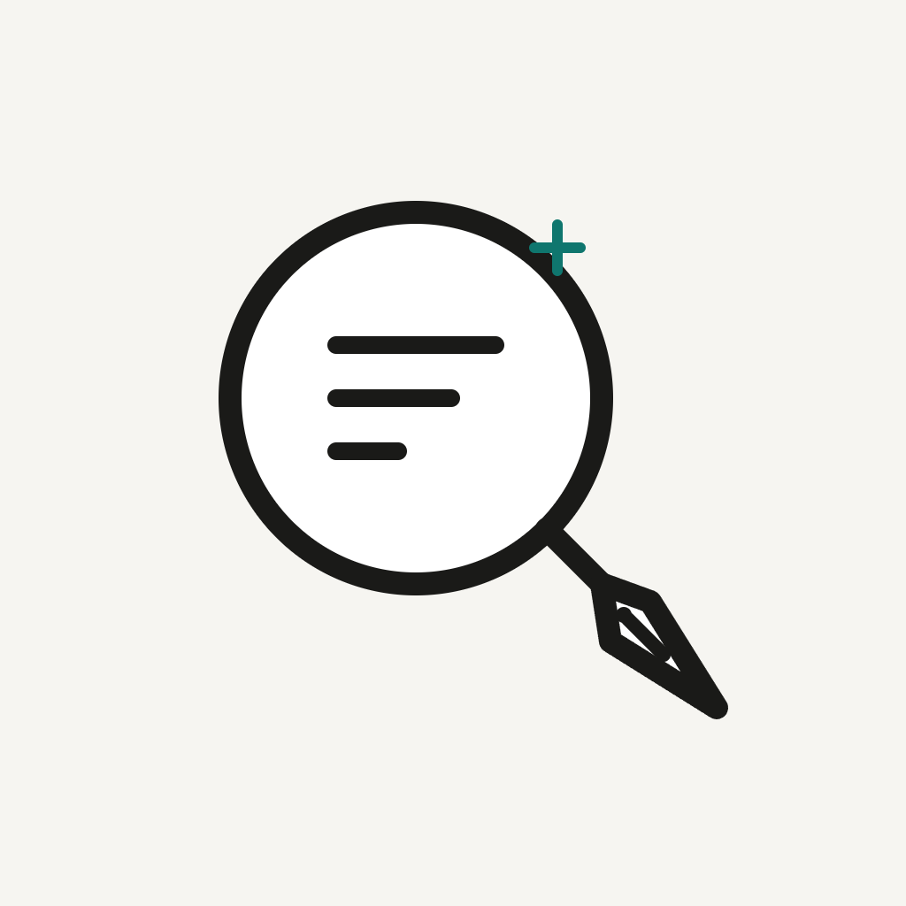
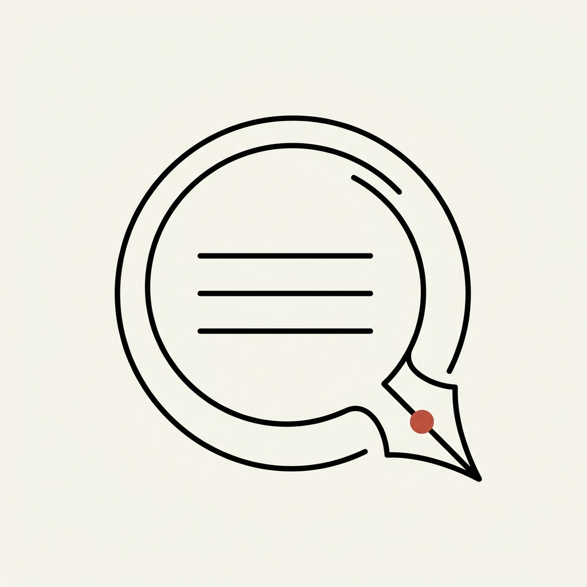
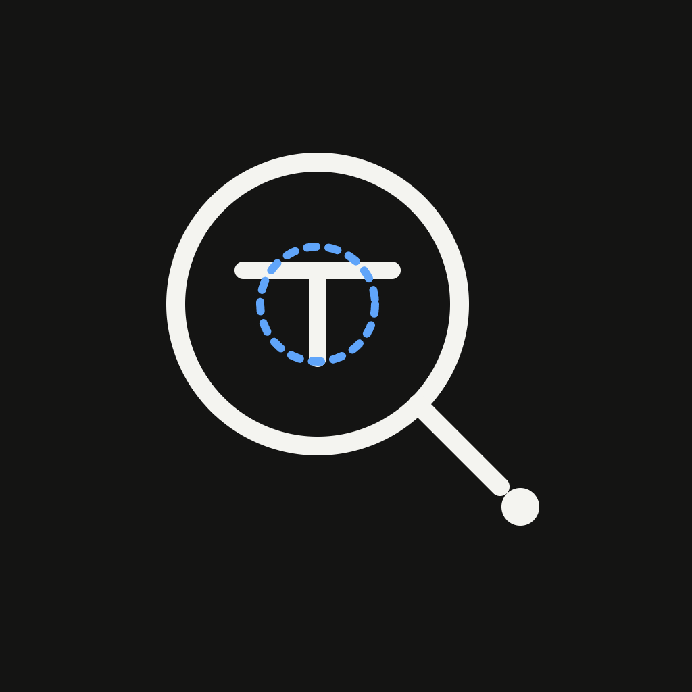
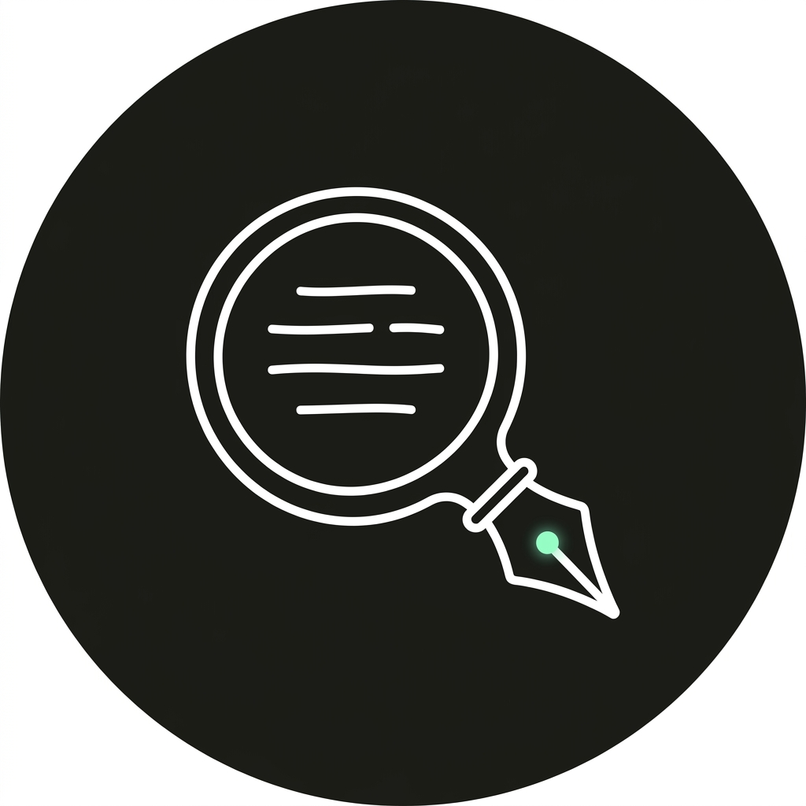
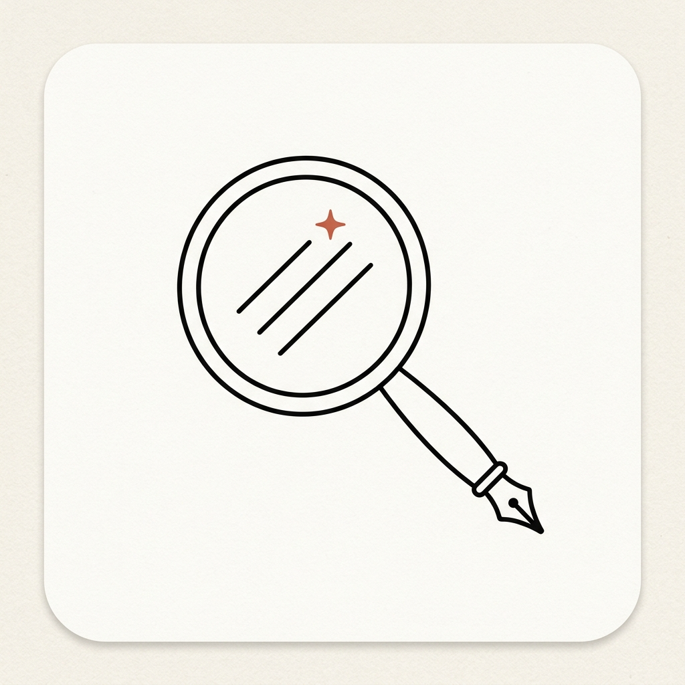

已自动按微信小程序圆形头像模拟裁切，选中心仪的一款即可在微信后台直接上传：
黑色均匀单线，镜内3道文字横线，手柄化作钢笔尖，右上角灵感星芒

日系手绘线稿质感，温润纸底，极简线条勾勒放大镜与笔尖

简笔单线条放大镜 + 折角稿纸与小星芒，极度亲和、治愈的创作者手绘风
极简纯白单线，深黑底色，T字审阅核心与极细对焦圆环，高反差高辨识度

手绘炭笔单线白描，深色背景，微信头像裁切后呈现高质感暗黑徽章

极简双线轮廓，手柄化作钢笔尖，内嵌陶土红四角创意星火
